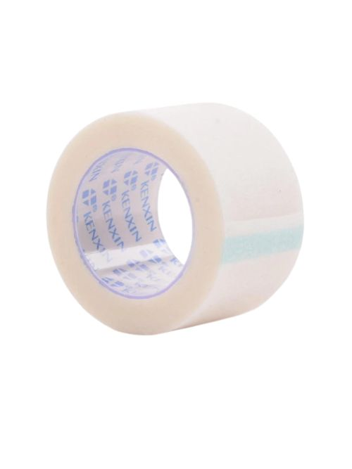

Medical Tape
Indications
Essential for wound care and medical procedures. This tape provides secure and gentle fixation of dressings and bandages, offering optimal comfort and flexibility. With a hypoallergenic adhesive, it's suitable for sensitive skin, minimizing irritation. Ideal for securing IV lines and immobilizing joints, medical tape is a trusted choice for healthcare needs. Additionally, its breathable material allows for adequate air circulation, promoting faster healing and reducing the risk of maceration, making it an indispensable tool in any medical setting.